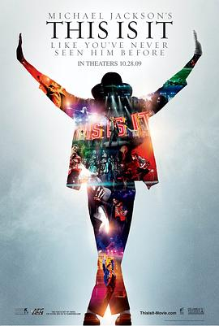

就是这样 / Michael Jackson's This Is It
又名：This Is It / 迈克尔·杰克逊：就是这样 / 麦可杰克逊：未来的未来演唱会电影 / 天王终点 / 这就是了
错过的黄金时代。又一部看完了也不会删，永远存在电脑里的片子。
作品信息
| 导演 | 肯尼·奥特加 |
| 主演 | 迈克尔·杰克逊 / 亚历克斯·阿尔 / 亚历桑德拉·阿帕雅罗娃 / 尼克·巴斯 / 迈克尔·比尔登 / 伊琳娜·布雷切 / 丹尼尔·赛勒布雷 / 梅姬娅·考克斯 / 迈尔斯·费伯 / 克里斯·格兰特 / 米沙·加布里埃尔·汉密尔顿 / 朱迪斯·希尔 / 多利安·霍雷 / 香农·霍尔扎菲尔 / 德文·贾梅森 |
| 类型 | 纪录片 / 音乐 |
| 制片国家/地区 | 美国 |
| 语言 | 英语 |
| 上映日期 | 2009-10-28(美国/中国大陆) |
| 片长 | 111分钟 |
| IMDb | tt1477715 |
最后一次看到是 2026-08-12T21:13:14+08:00 · 豆瓣原页